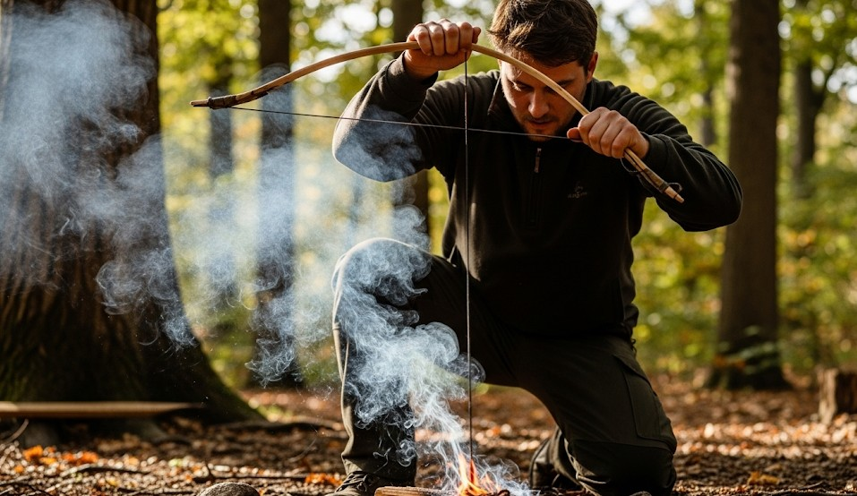

Fire‑Making: 5 Methods Without Matches
Objective
Ignite a sustainable fire in wet or windy conditions using tools you can carry or improvise.
Scenario (Example)
Example: Cold, wet evening; you have a ferro rod, a 9V battery, and wet wood. You need heat and morale fast.
Prep First: Fuel Ladder
- Tinder: cotton ball + petroleum jelly, or birch bark, or fine shavings.
- Kindling: pencil‑lead to pencil‑thick twigs—split wet sticks to expose dry cores.
- Fuel: thumb‑thick up to wrist‑thick, staged close at hand.
Method A: Ferro Rod
- Scrape coating, then place rod against tinder.
- Pull the rod back while holding the scraper still to avoid blowing tinder away.
- Feed tiny sticks; shield from wind with your body.
Method B: Flint & Steel
- Make char cloth (cotton in a tin, small vent hole, heat until smoke stops).
- Catch sparks on char cloth; nest in tinder; blow to flame.
Method C: Bow Drill (Practice ahead)
- Dry softwood board + spindle; hardwood bearing block.
- Wrap bow string once; fast, steady strokes.
- When smoke thickens, pause; let ember form; tip to tinder.
Method D: Magnification
- Sun + lens; dark, dry tinder like char cloth works best.
- Hold a steady focus until ember forms; transfer to tinder bundle.
Method E: 9V Battery + Steel Wool
- Spread 0000 steel wool; touch battery terminals to fibers.
- Once it glows, fold into tinder bundle; blow gently.
Common Errors
- Too little tinder; too big first sticks.
- Scraping the striker toward tinder (blows everything away).
- Quenching the ember by moving too soon.
10‑Minute Drill
With wet sticks, make a small splitwood fire using only a ferro rod. Time yourself from spark to sustained flame (5 minutes target).
← Previous | All Articles | Next →